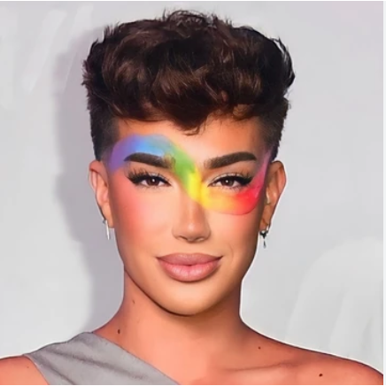
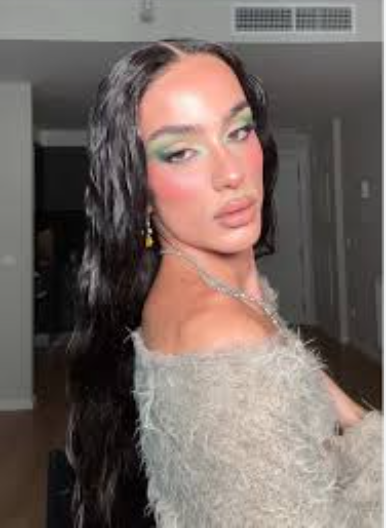
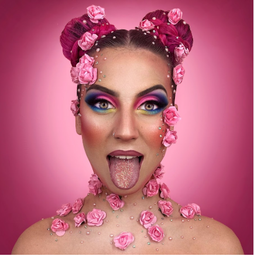

| Mi hobbby es maquillar y al hacerlo lo disfruto mucho. Tengo varios referentes que me inspiran a la hora de maquillar. |
|  |
James es el primer maquillador que descubrí, sus maquillajes tanto artisitcos como sociales son increibles |
| Lucian es una maquilladora que descubrí hace poco, hace solo social y me da muy buena energía |
|
|  |
Isra es de los mejrores maquilladores españoles, el en todos sus maquillajes me enseña algo |
| Nuria es una de las mejores, hace maquillares artisticos que traspasan la pantalla, es tan insipiradora en todo sentido |
 |
Por lo general soy una persona que disfruta mucho la soledad, pero en ocasiones disfuto los momentos compartidos con amigos y familia. Soy de esas perosnas que cuando organiza un plan, le gusta que salga de lo siemple, que tenga algo de experiencia gratificante. por eso les comparte un poco de los planes que disfruto y algunos que no tanto